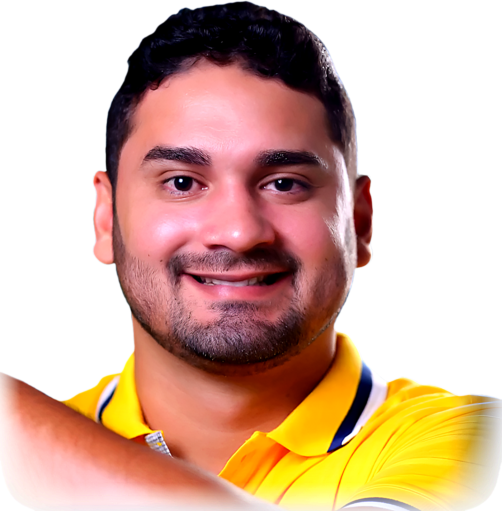
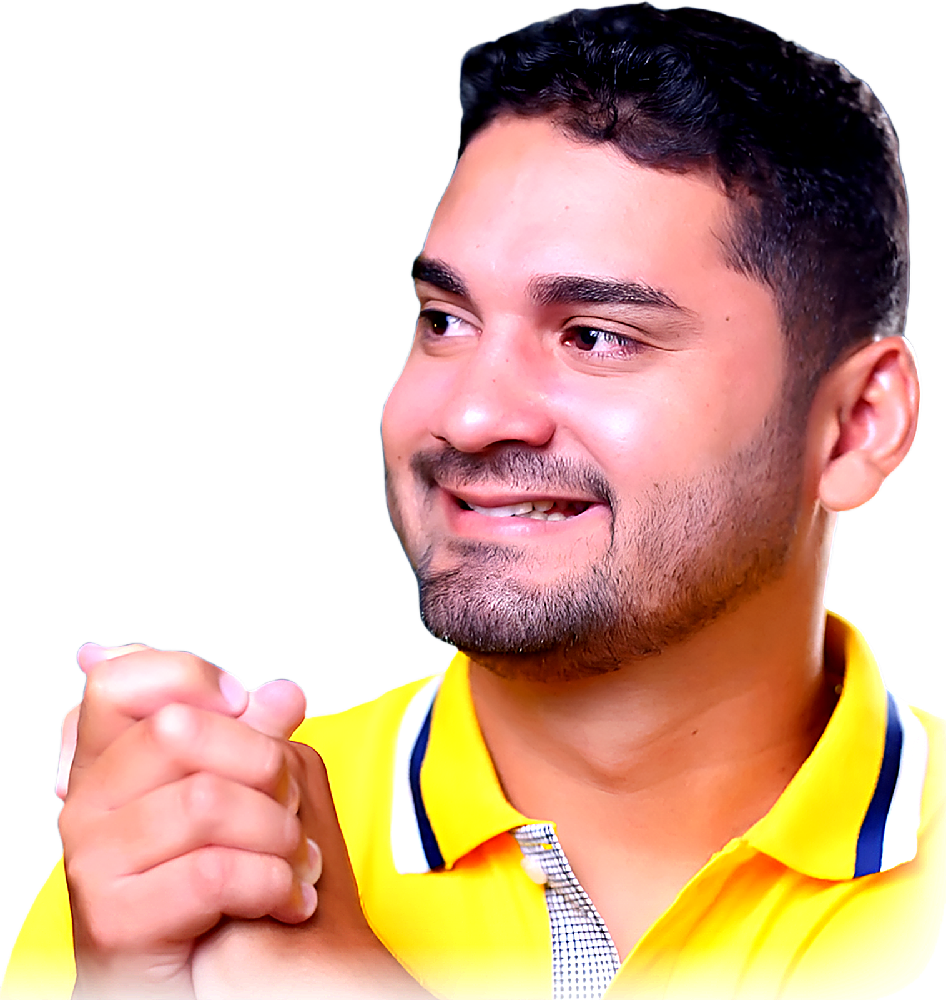

PRESENÇA
PRESENÇA
PRESENÇA
PRESENÇA
PRESENÇA

Vereador · São João Batista · MA
Leo de perto · Nº 02

Leo Pinto
Vereador · São João Batista
Mandato a gente mostra na rua: com data, com o nome do povoado e com quem estava junto.
O horizonte da BaixadaNº 03 · Nov 2026
Engenheiro.
Vereador.
Filho da Baixada.
Presença
que resolve.

02
Passo 2 de 4
Levar
junto com a
prefeitura
O pedido vira indicação na Câmara e conversa com a secretaria certa, em parceria.

Leo de perto
Obrigado,
São João Batista.
RESPONDA AQUI
De qual povoado você é?